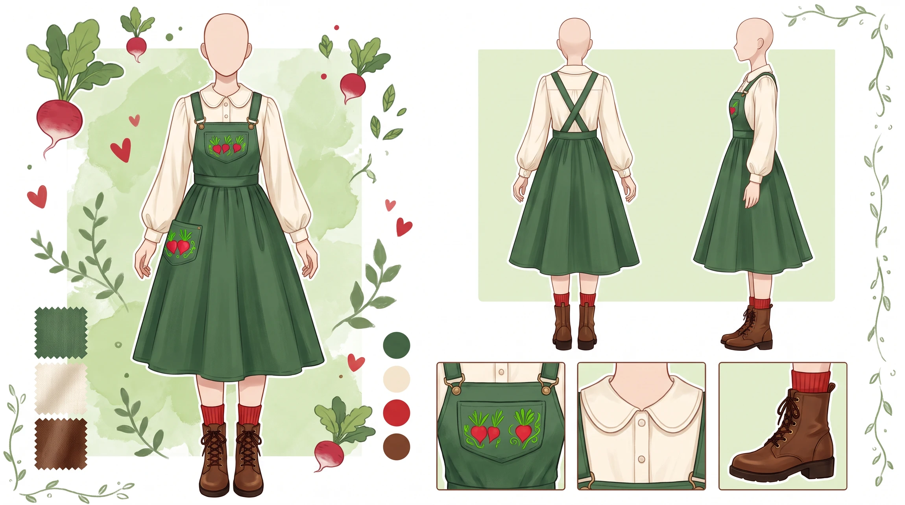
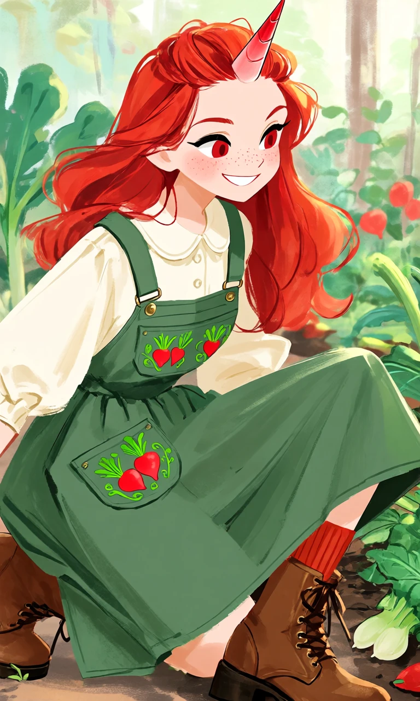

Radish Patch Darling

Outfit Prompt
A cream cotton blouse with a rounded collar and sleeves gathered at the elbows, tucked into a moss-green pinafore dress with a full calf-length skirt. Wide straps fasten with brass buttons, and two deep patch pockets feature embroidery of red radishes and curling green shoots. Rust-red ribbed socks and sturdy chestnut lace-up boots finish the outfit.
Outfit Examples

